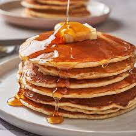

- Prepared hotcakes mixture
- 2 eggs
- Milk
- Butter
- Sift the mixture into a bowl
- Mix the mixture with the remaining sugar that was left in the sieve
- Heat 50 grams of butter until it becomes liquid
- Add milk to the mixture and start stirring
- Add the heated butter and the 2 eggs
- Keep adding milk while stirring but don't make it too liquid. The mixture should be relatively dense
- Heat a circular pan and spread butter on it
- Pour the mixture on the pan. Try to keep it as round as possible
- Wait until you see bubbles across the mixture and flip it to the other side
- Check the cooking on the bottom and take out the hotcake